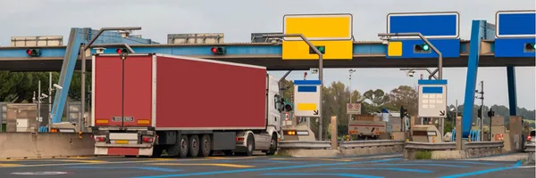
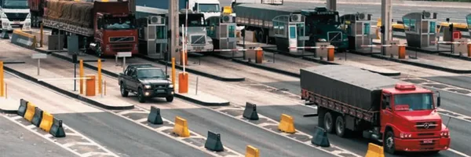
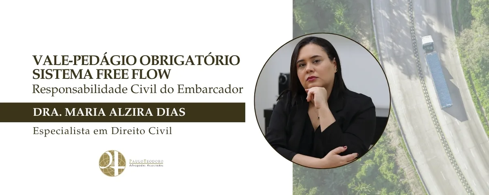

Vale-Pedágio Obrigatório – Sistema Free Flow – Responsabilidade Civil do Embarcador
A modernização das rodovias e dos meios de pagamento trouxe novos desafios e soluções para o cumprimento da Lei 10.209/01, que instituiu o Vale-Pedágio Obrigatório (VPO). A Resolução ANTT 6.024/23 e a implementação do sistema free flow são os principais vetores dessa transformação, impactando diretamente a relação entre embarcadores e transportadores.
Diferença entre Pedágio e Vale-Pedágio Obrigatório (VPO)
Inicialmente, é crucial reforçar a distinção entre os institutos. O pedágio é a tarifa paga pela utilização da infraestrutura da rodovia. Já o VPO é o benefício legal que impõe ao embarcador (contratante do frete) a obrigação de antecipar o custo integral do pedágio ao transportador.
O objetivo da lei é nítido: o transportador não pode arcar com essa despesa, e seu valor não deve ser embutido no frete. Essa premissa continua sendo a base de toda a regulamentação, inclusive das mais recentes.
A Resolução ANTT 6.024/23, que substituiu a antiga Resolução 2.885/08, veio para modernizar o VPO e adequá-lo à realidade digital. Ela consolida a transição do vale-pedágio físico para soluções tecnológicas, determinando que o pagamento do VPO seja feito por meio de fornecedoras de meios de pagamento eletrônico de frete (PEF) habilitado pela ANTT.

Sistema Free Flow e sua Operacionalização
O sistema free flow representa a evolução da cobrança de pedágio, eliminando as praças físicas e realizando a cobrança por meio de pórticos com sensores que identificam os veículos por tags eletrônicas ou pela leitura das placas, impactando diretamente a operacionalização do VPO.
Por sua vez, a obrigação do embarcador não muda. Ele continua responsável por calcular o custo total do pedágio na rota contratada e antecipar esse valor. Com o free flow a operação se dá da seguinte forma: o embarcador calcula o custo total dos pedágios na rota e, por meio de uma plataforma eletrônica de VPO, transfere o valor do pedágio como crédito para a tag do veículo do transportador. Assim, o motorista realiza o transporte sem se preocupar com o pagamento, pois ao passar pelo pórtico o sistema lê a tag e debita automaticamente o valor.
Essa sistemática aumenta a rastreabilidade e a transparência, permitindo um controle mais eficaz pela ANTT e reduzindo a possibilidade de fraudes ou disputas.
Logo, a combinação da Resolução ANTT 6.024/23 com o sistema free flow não altera a natureza da obrigação do VPO, mas a moderniza. A essência da Lei 10.209/01 — proteger o transportador do custo do pedágio — é mantida e reforçada pela tecnologia.
Consequências do Descumprimento do VPO
Noutro ângulo, é necessário evidenciar que o descumprimento dessas regras do VPO acarreta consequências severas e multifacetadas para o embarcador que vão muito além de simples multas.
A consequência mais grave é a indenização prevista no art. 8º da Lei 10.209/01, isto é, o embarcador que não cumpre a obrigação de antecipar o VPO fica obrigado a pagar ao transportador uma indenização no valor equivalente a duas vezes o valor do frete. A jurisprudência dos tribunais de justiça confirma que esta é uma sanção legal de caráter especial e não pode ser alterada por acordo entre as partes.
Ressalta-se que o descumprimento ocorre não apenas pela falta de pagamento, mas também quando é feito de forma incorreta, como embutir o valor do pedágio no frete; pagar após a viagem (a obrigação é de antecipação); e, não fornecer o valor total para cobrir todas as praças de pedágio da rota.
Com a automação da cobrança, o descumprimento gera problemas imediatos e rastreáveis. Se o embarcador não creditar o valor na tag do transportador, a passagem pelo pórtico free flow resultará em falha no pagamento, configurando evasão de pedágio. As consequências incluem:
- Dívida para o transportador, pois a dívida com a concessionária é registrada em nome do proprietário do veículo;
- Infração de trânsito grave resultando em multa e pontos na CNH do motorista ou no registro do veículo;
- Bloqueio da Operação, já que com o bloqueio da tag o veículo fica impedido de passar por outros pórticos, paralisando o transporte.
Além disso, o transportador prejudicado pode acionar judicialmente o embarcador para ser ressarcido de todos os prejuízos, incluindo multas, taxas e lucros cessantes. Na era digital, a ausência do registro eletrônico da transação de VPO, exigido pela Resolução 6.024/223, serve como prova em favor do transportador.

Com a automação da cobrança, o descumprimento gera problemas imediatos e rastreáveis. Se o embarcador não creditar o valor na tag do transportador, a passagem pelo pórtico free flow resultará em falha no pagamento, configurando evasão de pedágio. As consequências incluem:
- Dívida para o transportador, pois a dívida com a concessionária é registrada em nome do proprietário do veículo;
- Infração de trânsito grave resultando em multa e pontos na CNH do motorista ou no registro do veículo;
- Bloqueio da Operação, já que com o bloqueio da tag o veículo fica impedido de passar por outros pórticos, paralisando o transporte.
Além disso, o transportador prejudicado pode acionar judicialmente o embarcador para ser ressarcido de todos os prejuízos, incluindo multas, taxas e lucros cessantes. Na era digital, a ausência do registro eletrônico da transação de VPO, exigido pela Resolução 6.024/223, serve como prova em favor do transportador.
Riscos Financeiros e Operacionais
Em resumo, o embarcador que não cumpre a regra do VPO se expõe a um risco financeiro alto de pagar o frete três vezes (uma pelo serviço e duas pela indenização), além de causar prejuízos operacionais e legais diretos ao transportador.


Paulo Teodoro – Advogados Associados
- Eventos
- Artigos
- Saiba mais sobre o escritório ▸